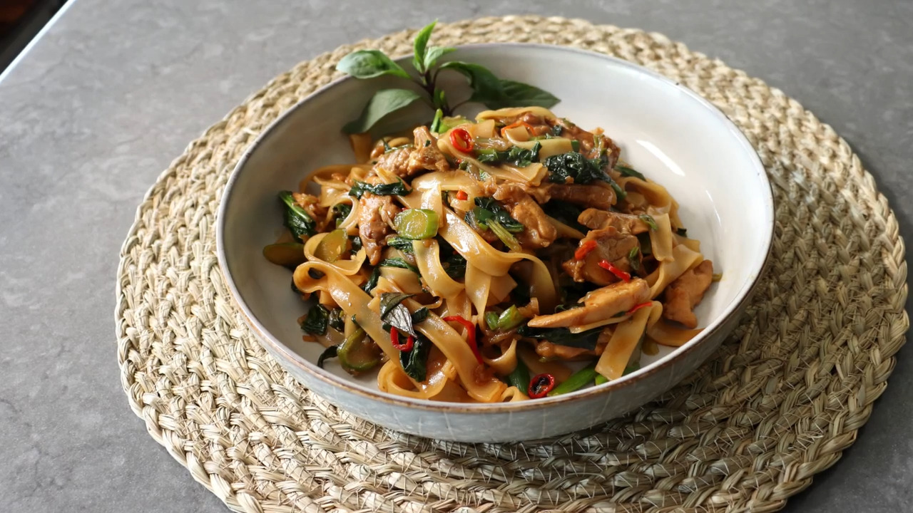

Drunken Noodles

Description
by Chef John, from allrecipes.com
Ingredients
- 8 ounces dried rice noodles
- ¼ cup oyster sauce
- ¼ cup soy sauce
- 1 tablespoon Asian fish sauce
- 1 tablespoon maple syrup
- 1 teaspoon white sugar
- 2 tablespoons cold water
- 2 tablespoons vegetable oil
- 1 teaspoon sesame oil
- 1 cup shallots, thinly sliced
- 6 teaspoons chile padi (bird's eye chiles), thinly sliced
- 4 cloves garlic, minced
- 2½ pounds skinless, boneless chicken thighs, cut into strips (Optional)
- 1 pound Chinese broccoli, sliced (Optional)
- 4 stalk (blank)s green onions, thinly sliced
- 1 cup fresh Thai basil leaves
Steps
- Step 1
- Soak rice noodles in hot water until flexible, 10 to 15 minutes.
- Occasionally move the noodles around to separate them.
- Drain the water and cover with a wet paper towel.
- Step 2
- Combine oyster sauce, soy sauce, Asian fish sauce, maple syrup, sugar, and water in a small bowl.
- Step 3
- Heat vegetable oil and sesame oil in a wok, or large frying pan, over medium-high heat.
- Stir-fry shallots, chile peppers, and garlic until shallots are soft, about 2 minutes.
- Move the mixture around the outside of the pan to create a space and add chicken.
- Sear for 1 minute, then combine with shallot mixture. Add Chinese broccoli stems and stir-fry until tender, about 2 minutes.
- Add Chinese broccoli leaves and stir-fry until wilted.
- Step 4
- Add drunken noodle sauce and sliced green onions and mix.
- Cook until sauce begins to simmer.
- Add soaked rice noodles and toss to coat until noodles have absorbed the sauce and are cooked through, about 2 minutes.
- Remove from heat.
- Step 5
- Stir in Thai basil leaves until wilted.
- Taste and adjust seasoning if needed.
- Serve.